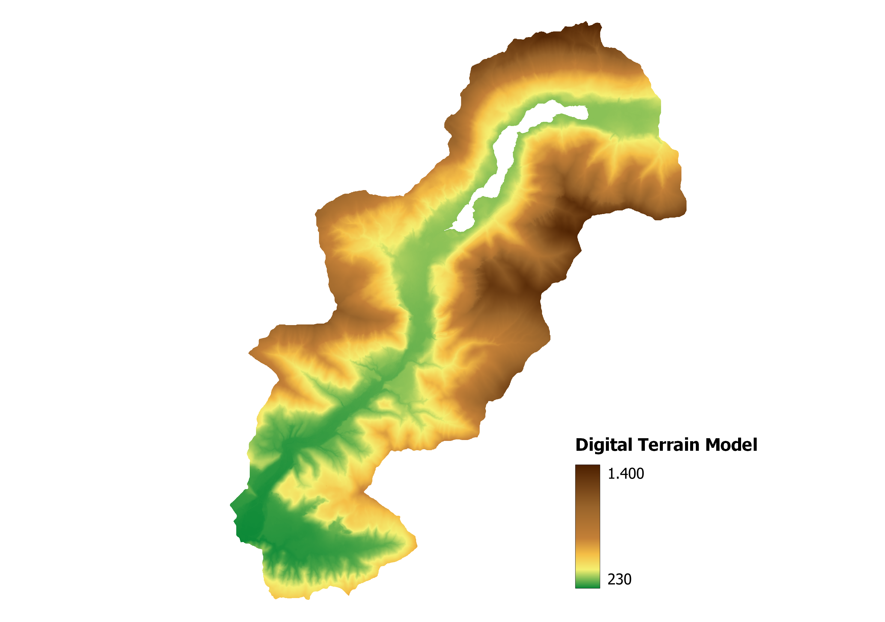
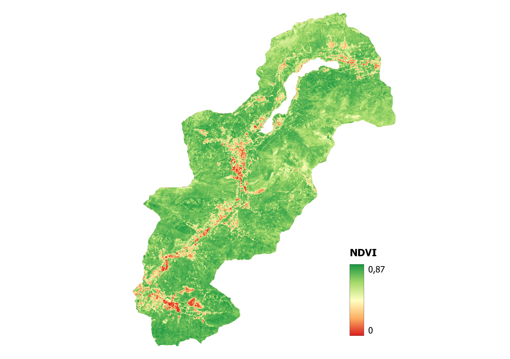
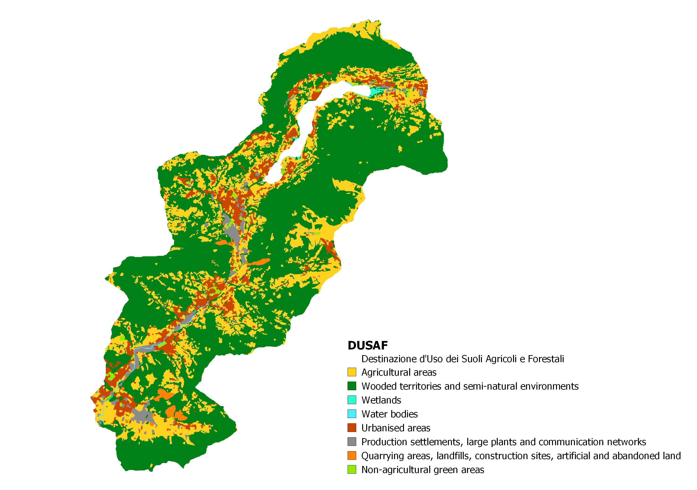
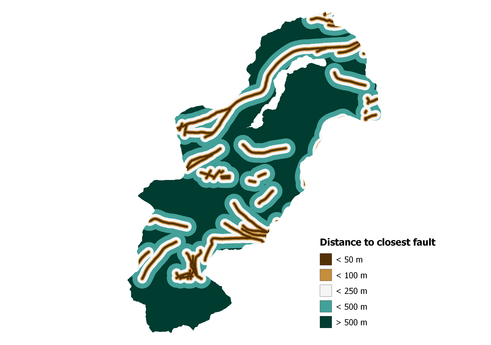
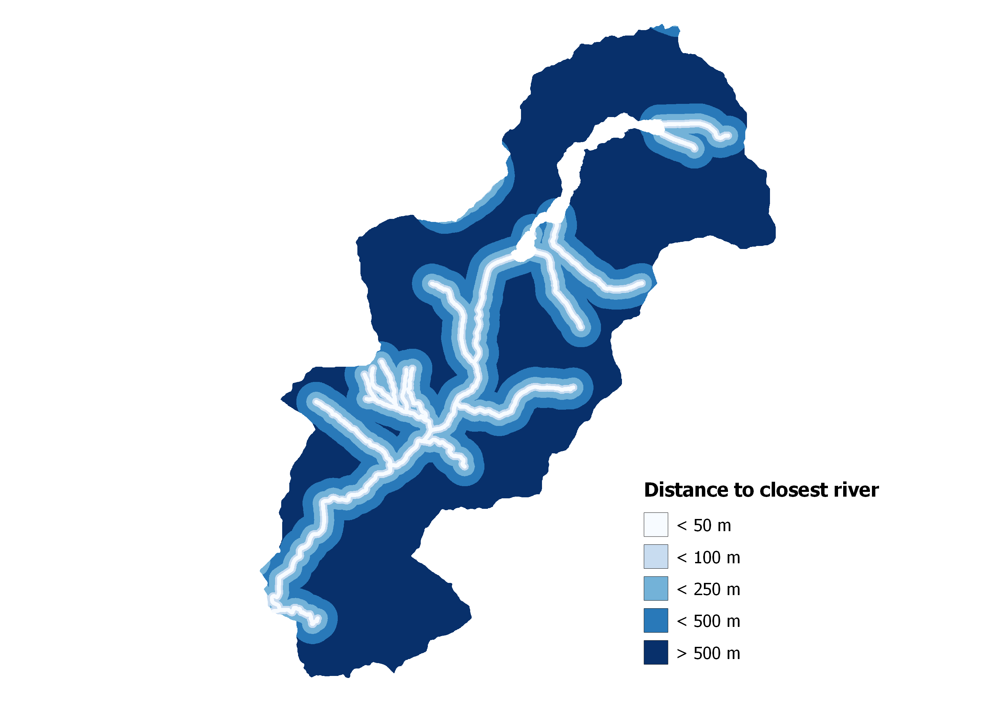
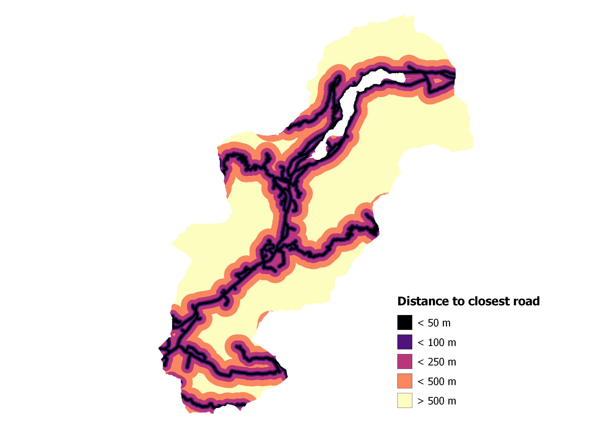
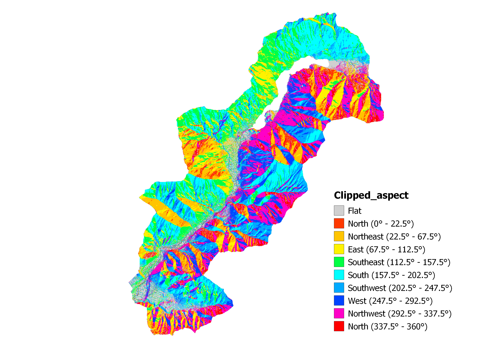
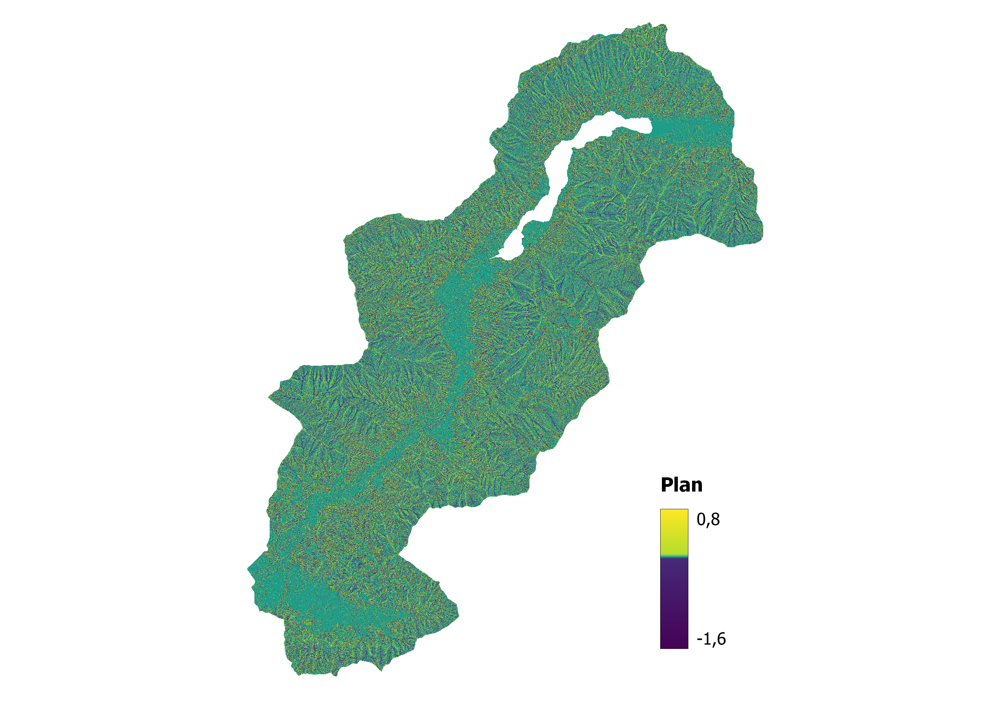
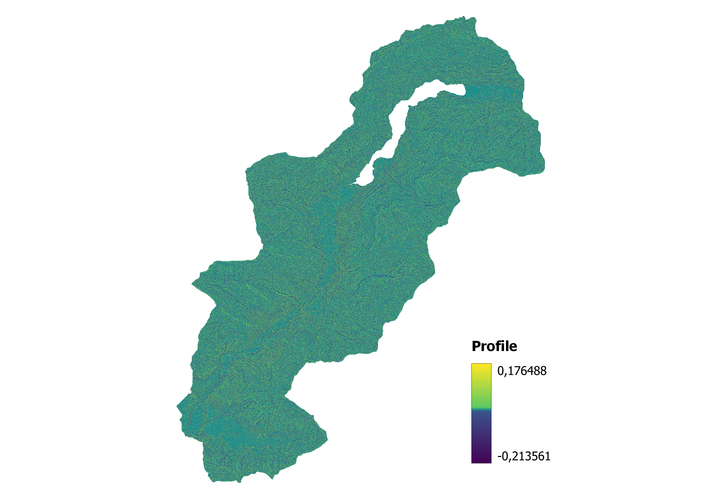
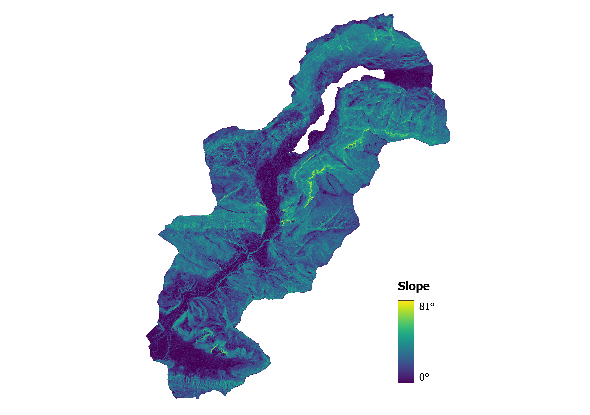

Preprocessing

DTM
Starting with the DTM obtained through GeoPortale Lombardia, we clipped the layer to our assigned zone. The resolution per pixel of this layer is 5 m/px, and based on this, we decided to also standardise the resolutions of the other layers to match this value. The values in this layer ranges from about 240 meters above the mean sea level (lower Val Cavallina) to a maximum of about 1400 meters, reached in the mountains surrounding the Endine Lake.
{kind=link}

NDVI
Computed from ESA Sentinel 2 images, we clipped it from the entire Lombardy region to our case study zone and also resampled from 10 meters per pixel to 5 meters per pixel to match the choosen common resolution. The scale goes from 0 (lowest vegetation index, usually where there are buildings and roads) to 1 (highly vegetated areas).
{kind=link}

DUSAF
Agricultural and Forestry Land Use Designation data from GeoPortale Lombardia, the territory is subdivided in classes based on the usage. Originally the starting layer was in WGS84 projection, so we reprojected it usingWarp (Reproject)function into WGS 84 / UTM zone 32N projection and then clipped as the previous layers to our study area. Also in this case we resampled the layer to 5 meters per pixel (original resolution 5.8 m/px).
{kind=link}

Faults
Faults data from GeoPortale Lombardia, the territory is subdivided in classes based on the distance from the faults. After clipping to our study area as the previous layers, we converted it into raster usingRasterize (Vector to Raster)QGIS function since in this case the layer was vectorial.
{kind=link}

Rivers
River network data retrieved from OpenStreetMap, the territory is subdivided in classes based on the distance from the rivers. After clipping to our study area as the previous layers, we converted it into raster usingRasterize (Vector to Raster)QGIS function since in this case the layer was vectorial.
{kind=link}

Roads
Road network data retrieved from OpenStreetMap, the territory is subdivided in classes based on the distance from the roads. After clipping to our study area as the previous layers, we converted it into raster usingRasterize (Vector to Raster)QGIS function since in this case the layer was vectorial.
{kind=link}
From the DTM layer several terrain attributes can be computed, for example slope, aspect and profile curvature. They are useful for evaluating the rate of change of slope and can be used to identify features like ridges and valleys in the terrain.

Aspect
Aspect computed from the DTM thanks to the GDAL - Aspect function in QGIS. The aspect is the orientation of the slope, and here it is subdivided in 8 classes for visualization purposes (N, NE, E, SE, S, SW, W, NW) plus flat areas.
{kind=link}

Plan
Plan computed from the DTM thanks to the SAGA - Slope, Aspect, Curvature function in QGIS. The plan is perpendicular to the direction of the maximum slope. A positive value indicates the surface is sidewardly convex at that cell. A negative plan indicates the surface is sidewardly concave at that cell. A value of zero indicates the surface is linear Profile curvature relates to the convergence and divergence of flow across a surface.
{kind=link}

Profile
Profile computed from the DTM thanks to the SAGA - Slope, Aspect, Curvature function in QGIS. The profile curvature is parallel to the direction of the maximum slope. A positive profile indicates that the surface is upwardly concave at that cell. A negative value indicates that the surface is upwardly convex at that cel. While a value of zero indicates that the surface is linear. The profile curvature affects the acceleration or deceleration of flow across the surface.
{kind=link}

Slope
Slope computed from the DTM thanks to the GDAL - Slope function in QGIS. The slope refers to the rate of change of elevation for each cell within a digital elevation model (DEM). It is essentially the first derivative of a DEM, indicating how steep a particular part of the terrain is. The slope is usually expressed in degrees or as a percentage, representing the angle of incline or decline relative to a horizontal plane.
{kind=link}
Then starting from Slope layer, we computed NLZ (No Landslides Zone), the zones in which a landslide theoretically can't occur. We obtained it using in the Raster calculator the following formula: "slope@1" < 20 OR "slope@1" > 70 and sieving it for remove too small areas, not significant for our purposes.
Moreover we used data from zone in which landslides have already occurred (from IFFI catalogue), both for removing that zones from computed NLZ as untrue information (since a landslide in that area has already happened) and also as example of area in which a landslide can occur. We did so in order to make our dataset more accurate for the next steps.
{kind=link}
{kind=link}
{kind=link}
{kind=link}
Union of previous layer (NLZ + LS Inventory)
{kind=link}
{kind=link}
{kind=link}
{kind=link}
{kind=link}
{kind=link}
{kind=link}
{kind=link}